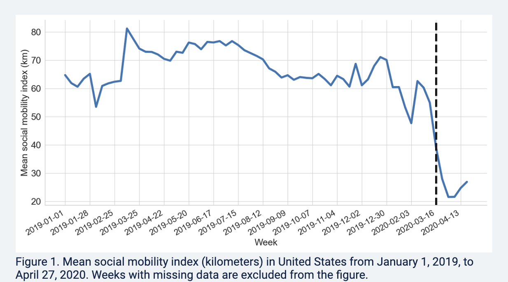

4.7 Application: Trends during COVID
For a video companion for sections 4.7-4.9 and the code for line/trend plots, see below. The video only discusses the notes and code. (Via youtube, you can speed up the playback to 1.5 or 2x speed.)
Since the onset of the pandemic in 2020, researchers have evaluated attitudinal and behavioral responses to policy changes, political messages, and COVID case/hospitalization/death rates.
- Survey data on attitudes and self-reported behavior
- Health care provider administrative data
- Mobile phone data to track locations
- Social media data to track attitudes and mobility
Example: Using Survey data from over 1.1 million responses to measure concern about the coronavirus over time.
- Clinton, Joshua, et al. “Partisan pandemic: How partisanship and public health concerns affect individuals’ social mobility during COVID-19.” Science advances 7.2 (2021): eabd7204.

Example: Using the geotracking data of 15 million smartphones per day to compute percentage reduction in general movement and visiting non-essential services relative to before COVID-19 (before March 9).
- Gollwitzer, Anton, et al. “Partisan differences in physical distancing are linked to health outcomes during the COVID-19 pandemic.” Nature human behaviour 4.11 (2020): 1186-1197.

Example: Using Twitter geolocation data to track how much movement users have by looking at the distances from all locations where a given user has tweeted.
- Paiheng Xu, Mark Dredze, David A Broniatowski. “The Twitter Social Mobility Index: Measuring Social Distancing Practices from Geolocated Tweets.” Journal of Medical Internet Research (JMIR), 2020.

We will use the Twitter social mobility index to study how the movement of geo-located Twitter users changed from 2019 into September 2021.
- We will compare this movement for users located in the Northeast vs. South
Each row of the dataset represents a week of the year. Each column represents a particular geography for which social mobility was calculated by the researchers.
Datesindicates the dateNortheast: social mobility data for those in the northeast of the U.S.South: social mobility data for those in the south of the U.S.
## Load the data from the author Mark Dredze's website
covid <- read.csv("https://raw.githubusercontent.com/mdredze/covid19_social_mobility.github.io/master/data/longitudinal_compiled.csv")Just like we have encountered numeric, factor, and character variables, R also has the ability to treat variables specifically as dates. We will want R to treat the date variable we read in as a date, and not as raw text or some other variable type. To do this, we will use the as.Date function.
## Date variable original format and class
head(covid$Dates)## [1] "2019-01-01" "2019-01-07" "2019-01-14" "2019-01-21" "2019-01-28"
## [6] "2019-02-04"class(covid$Dates)## [1] "character"## Convert to class Date
covid$Dates <- as.Date(covid$Date)
head(covid$Dates)## [1] "2019-01-01" "2019-01-07" "2019-01-14" "2019-01-21" "2019-01-28"
## [6] "2019-02-04"class(covid$Dates)## [1] "Date"The researchers continue to add to these data. Let’s look at the portion of data from 2019 to September 2021.
- Note the use of
as.Dateagain to make sure R knows our text should be treated as a date - Note the use of the greater than or equal to
>=and less than or equal signs<=to specify which rows we want to keep in the data. We want rows that are in dates after January 1, 2019 and (&) on or before September 1, 2021.
covidsub <- subset(covid, Dates >= as.Date("2019-01-01") &
Dates <= as.Date("2021-09-01"))